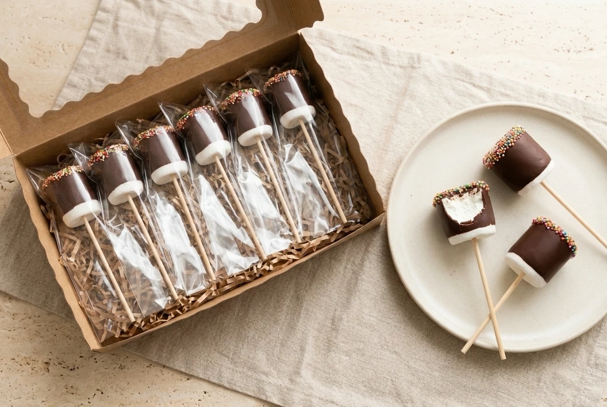
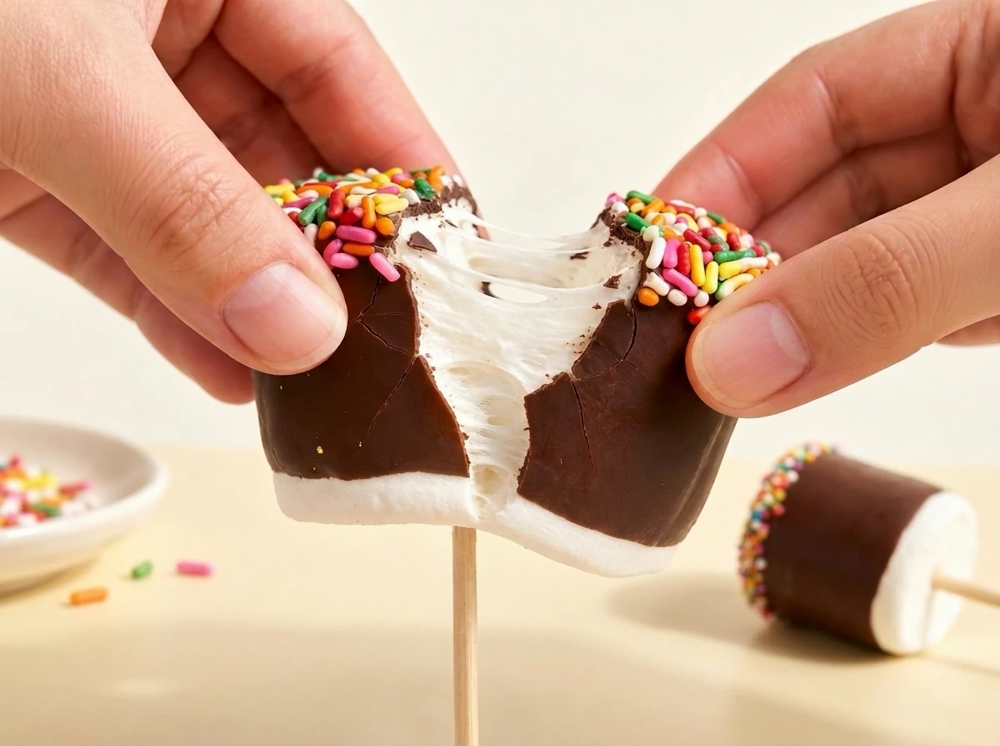
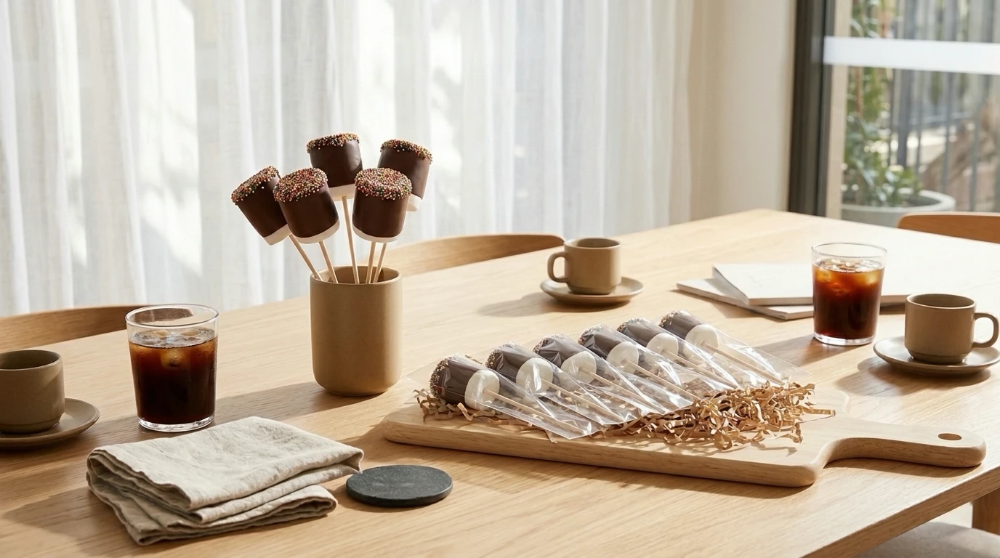

VERYGOOD JOURNAL · CELEBRATING & GIFTING · SMALL BITES GUIDE
How a no-cut, individually wrapped chocolate marshmallow treat simplifies Sydney birthdays, park picnics and office gifting — in packs of 6 or 12.
When you are hosting a birthday in a Sydney park, thanking a busy office team or packing take-home party bags, the hardest part of dessert is rarely the flavour — it is the logistics. A whole cake asks for a flat table, a sharp knife, stacks of paper plates and a steady hand before the afternoon breeze kicks up.
Our S’more Sticks solve that friction in one playful bite: a thick, airy marshmallow on a natural wooden stick, hand-dipped in real dark couverture chocolate and crowned with colourful rainbow sprinkles.
KEY TAKEAWAY · NO-CUT SHARING IN PACKS OF 6 OR 12
Individually wrapped and made to order in packs of 6 or 12 (or added alongside a Custom Cake), S’more Sticks hand straight to guests with zero plates, forks or knives needed. Pre-arranged pickup in Melrose Park, Sydney.

Not every chocolate-dipped marshmallow eats the same way. Mass-produced versions often use compound coatings made with vegetable fats that bend softly and leave a waxy film. Real couverture chocolate carries a higher percentage of cocoa butter[27]—when properly tempered into stable crystals, it sets into a glossy shell that breaks with a crisp snap before melting cleanly on the palate.[28]
TEXTURE ARCHITECTURE · THREE CONTRASTING LAYERS IN ONE BITE
LAYER 01 · TEMPERED SHELL
Real Dark Couverture
Higher cocoa-butter couverture[27] sets into a glossy, firm coat with a clean audible snap[28] that balances sweetness with cocoa depth.
No waxy compound film on the finish.
LAYER 02 · CROWN
Rainbow Sprinkles
Generous multicoloured sprinkles across the top rim bring gentle crunch and instant celebration colour right out of the sleeve.
Festive finish without messy loose crumbs.
LAYER 03 · CORE
Pillowy Marshmallow
An aerated sugar-foam centre[29] yields effortlessly once the shell breaks, leaving a crisp uncoated white band above the wooden stick.
Clean to hold from first bite to last.
Because every S’more Stick is portioned on its own wooden stick and sealed inside a clear sleeve, counting for a guest list takes seconds. In our Sydney Small Bites range, they are made to order in packs of 6 or packs of 12—and larger event counts can be arranged directly with our team.
Hosting a birthday with a centrepiece cake? Adding S’more Sticks lets kids and mingling guests grab a treat immediately while your Pavé, Brownie Basque or Custom Cake stays photo-ready until candle time.

HOW TO ORDER · MATCHING PACK SIZE TO YOUR GATHERING
PACK OF 6 · PICNICS
Weekend & Family Sharing
Ideal for park blankets, backyard barbecues and small catch-ups where plates and cake knives only slow you down.
PACK OF 12 · FAVOURS
Party Bags & Office Drops
Individually sealed clear sleeves slip straight into kids’ party bags or line up cleanly on an office tea counter.
CAKE ADD-ON · EVENTS
Pair With a Whole Cake
Hand sticks to early arrivals and younger guests while your main celebration cake stays pristine until candle time.
Because our S’more Sticks are dipped in real couverture chocolate rather than heat-stabilised compound glaze, a few simple chocolate-care habits keep every stick glossy and crisp in Sydney weather:[25]
SYDNEY CHOCOLATE CARE · FOUR SIMPLE HABITS
• Store cool and dry (15–18 °C): Keep boxed sticks in a cool pantry or air-conditioned room away from direct sun and kitchen heat so the dark couverture stays crisp.[25]
• Shade them on warm drives: Unlike cream cakes that require strict refrigeration until slicing, S’more Sticks hold comfortably indoors—just pack a shaded cooler bag with an ice pack for sunny Sydney car trips.[7][25]
• Keep chilled sleeves airtight: If you chill sticks briefly on a hot day, keep sealed sleeves inside an airtight container so moisture does not settle on the chocolate surface.[25]
• Stand upright or hand out wrapped: Arrange unwrapped sticks in a heavy stoneware tumbler for grazing tables, or hand sealed sleeves straight from the box as favours.
INGREDIENTS, DIETARY & ALLERGEN REMINDER · FSANZ
Couverture chocolate and marshmallow can involve specific ingredients and dietary considerations (including dairy, soy, shared kitchen allergens and gelatin in marshmallow). Please contact our team before ordering to confirm full ingredient and allergen details for your guests.[23]

VERYGOOD CHOCOLATE · MELROSE PARK PICKUP · SYDNEY
Explore S’more Sticks in our Sydney Small Bites range—made to order in packs of 6 or 12 for pre-arranged pickup in Melrose Park, or enquire through our Business and Custom Cake pages for larger party and corporate quantities.
[7] https://www.foodstandards.gov.au/business/food-safety/transporting-food-safely — FSANZ — Transporting food safely
[23] https://www.foodstandards.gov.au/consumer/labelling/allergen-labelling — FSANZ — Allergen labelling for consumers
[25] https://haighschocolates.com.au/how-to-care-for-your-chocolate — Haigh’s Chocolates Australia — How to care for your chocolate
[27] https://www.valrhona.com/en/l-ecole-valrhona/discover-l-ecole-valrhona/chocolate-terminology/couverture-chocolate — Valrhona — Couverture chocolate
[28] https://www.callebaut.com/en/chocolate-video/technique/tempering — Callebaut — Tempering chocolate
[29] https://www.kingarthurbaking.com/recipes/homemade-marshmallows-recipe — King Arthur Baking — Homemade Marshmallows